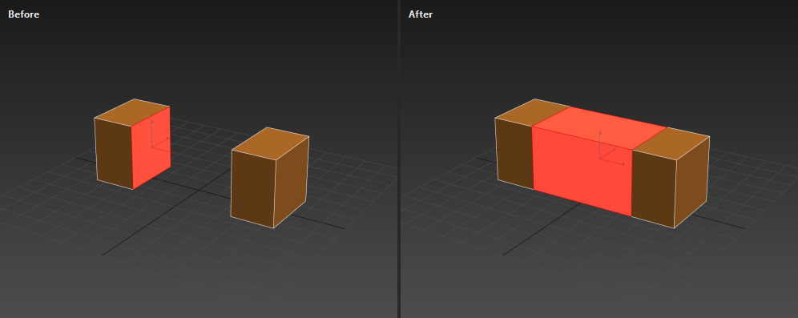
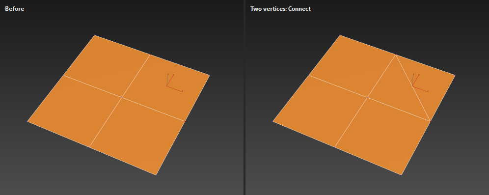
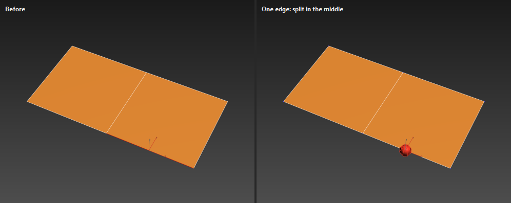
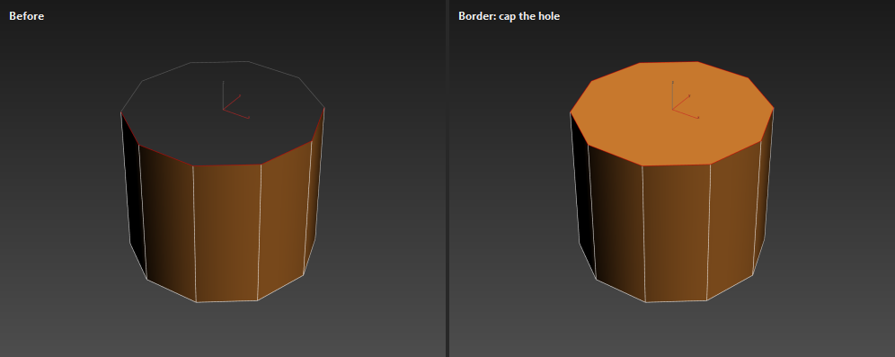
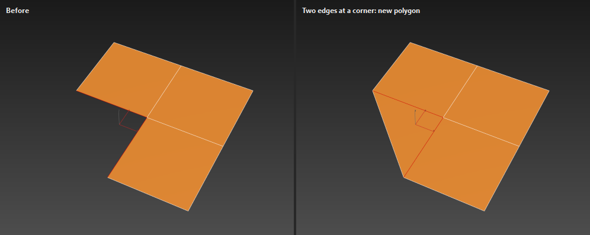
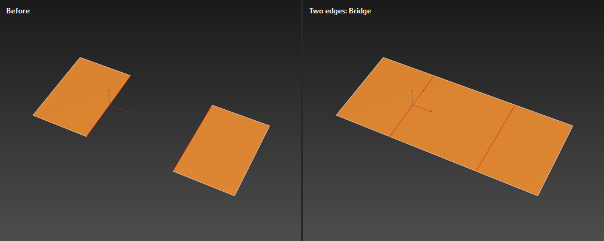

Tools / Smart Create
Smart Create
One key that creates the right thing for your selection.
What it does
Smart Create does the obvious "make something here" operation for the sub-object level and selection you have, on an Editable Poly or Edit Poly.

Select two facing polygons and press Space: the bridge is created.
How to use it
- Go to a sub-object level of an Editable Poly or Edit Poly and select something.
- Press Space.
- The matching operation runs as one undo step.
Options
| Level and selection | What happens |
|---|---|
| Vertices | Connects the selected vertices. |
| Nothing selected at edge level | Turns on the Create Edge mode. |
| One edge | Splits it in the middle and selects the new vertex. |
| Two edges that share a vertex | Makes a polygon from the corner, facing the same way as its neighbours. |
| Other edges | Bridges them; if that makes nothing, connects them. |
| Border | Caps the hole. |
| Fewer than two polygons | Turns on the Create Polygon mode. |
| Two or more polygons | Bridges them. |





Good to know
- It works with several objects selected.
- You can also run it from the 9000 Toolkit category.